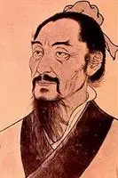

墨子
翻 看 竹 简
穿越千年,讓我們走近這樣一位聖賢,探求埋藏多年的~
守 道
觀名人如何評價墨子
毛泽东：
墨子是一个劳动者，他不做官，但他是比孔子高明的圣人，是古代辩证唯物论大家。
鲁迅：
墨子是中国的脊梁，传奇式的伟大英雄。
陈独秀：
假若墨子不绝，汉以来的历史绝不会如此。
蔡尚思：
中国出了一墨子，是最值得中国人骄傲的。
季羡林：
墨子在人类文明史上，代表了一个时代的高度。他在哲学，教肓，科学，逻辑，军事防御工程等许多领域，都有杰出的贡献，是一位伟大的平民圣人。
蔡和森：
列宁在苏俄实行的与墨子理论近似。
张申府：
周季墨家，乃是当时最前进，最革命的学派。
蔡元培：
墨学中断使中国科学不得发达。
章太炎：
墨子之道德，非孔老所敢窥视。——孔儒道德，假大空！
梁启超：
墨子之道，摩顶放踵以利天下，欲救今日之中国，舍墨学之忍苦痛何以哉？墨学之轻生何以哉？
吾尝谛观思惟，则墨学精神，深入人心，至今不附，因以形成吾民族特性之一者，盖有之矣。
墨子是劳动人民的大圣人。
从别方面说，墨子又是个大马克思。
杨向奎：
一部墨经无论在自然科学哪一方面，都超过整个希腊，至少等于整个希腊。
蔡元培：
先秦唯墨子颇治科学，假使今日中国有墨子，则中国可救，墨子也许是中国出现过的最伟大人物。
